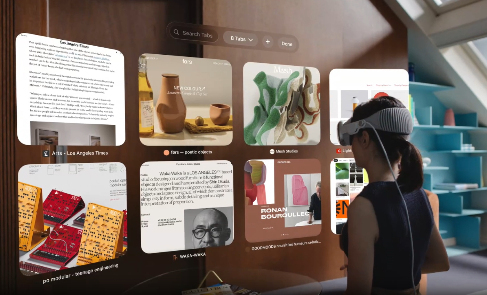
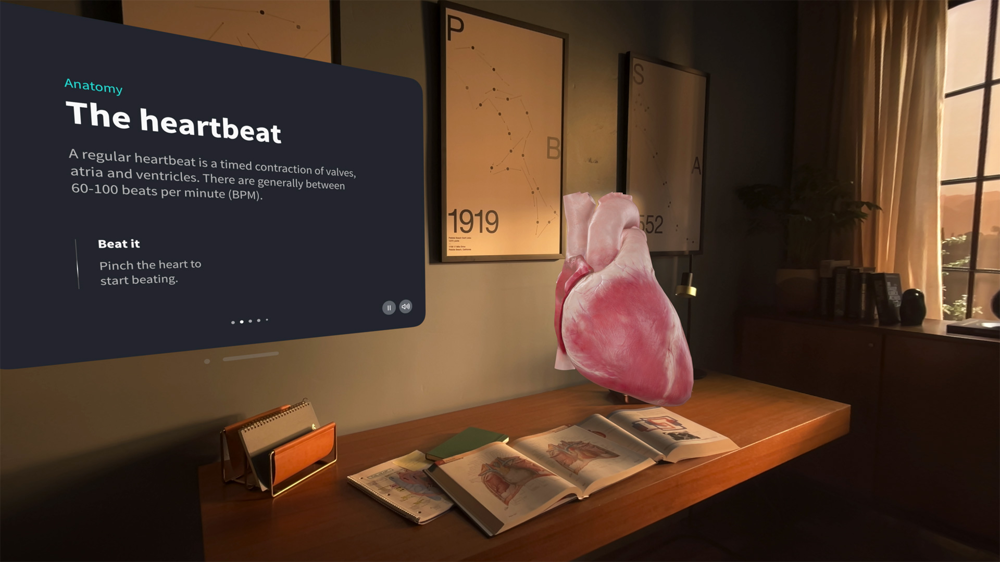
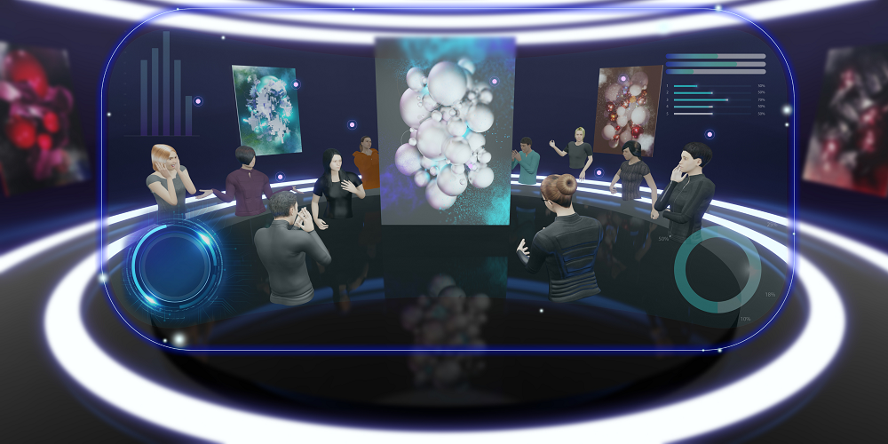
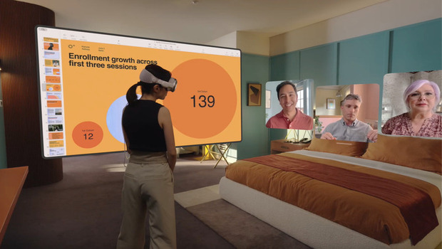

The ever-evolving world of technology continuously shapes and redefines how we approach higher education.
With Education 4.0 paving the way for more immersive, personalized, and digitized learning experiences, one can't help but wonder how the latest technological advancements will fit into this new era of learning.
One such latest technological invention is the Apple Vision Pro for education, an innovative device that promises to bridge the gap between reality and the virtual world, potentially transforming how we perceive and interact with educational content.
Here's a comprehensive look at the ways the Vision Pro for higher education might reshape the educational landscape.
1. Interactive Content Consumption with Apple Vision Pro

The very essence of spatial education lies in its ability to immerse learners in an environment that is both engaging and interactive.
Apple Vision Pro, with its unique blend of VR and AR capabilities for education, is set to revolutionize this space.
No longer confined to the traditional means of staring at screens, students can now interact with content in a more intuitive manner, all thanks to Vision Pro for education.
Gesture orientation, eye-tracking technology, and voice dictation are features that stand out when considering the Vision Pro for higher education.
These features not only make the technology more accessible for individuals with disabilities but also offer a more seamless and natural user experience.
Imagine a Vision Pro lab where students can engage with the curriculum in a manner that is both enjoyable and effective, thereby enhancing retention and comprehension.
This kind of spatial learning, powered by devices like Apple Vision Pro in education, might soon become the new norm.
2. Enriching the Classroom Experience with Vision Pro Lab

With the potential to transform ordinary classrooms into extraordinary learning environments, the Vision Pro for Education is poised to take pedagogy to the next level.
How about an astronomy class where the ceiling comes alive with constellations or a medical VR session where anatomy is explored without the need for actual dissections?
Well, the possibilities are limitless.
One of the higher education trends that has been emerging is the move towards experiential learning.
By leveraging the Apple Vision Pro in education and learning, educators can offer students tangible, memorable experiences.
Be it exploring historical artifacts or diving deep into intricate architectural designs in VR architecture labs, Vision Pro brings content to life in unparalleled ways.
3. Facilitating Remote Collaboration and Virtual Classrooms

Apple Vision Pro enables educators and students to collaborate in virtual environments that feel physically present.
With immersive video conferencing, shared digital workspaces, and spatial audio, it creates a more engaging and natural remote learning experience, breaking geographical barriers and allowing institutions to host interactive, high-quality classes from anywhere in the world.
4. Offering Real-Time Language Translation and Captioning
Image source: daytranslations.com
Apple Vision Pro enhances higher education by integrating real-time language translation and captioning, making it a powerful tool for global classrooms.
International students can instantly translate lectures, presentations, and course materials into their preferred language, promoting inclusivity and understanding.
This reduces communication gaps and fosters seamless multilingual learning. By breaking down language barriers, Apple Vision Pro ensures improved classroom participation, comprehension, and collaboration.
It empowers universities to support diverse learners from around the world, making education more accessible and effective in today’s increasingly globalized and interconnected academic environment.
5. Revolutionizing Presentations and Content Delivery

Gone are the days when presentations were limited to slides and projectors.
With the Apple Vision Pro for higher education, the entire room can be transformed into a dynamic canvas, allowing for a more immersive and interactive presentation experience.
Powered by the R1 chip and equipped with multiple cameras, microphones, and sensors, the Apple Vision Pro in education ensures high-quality video and audio content delivery with minimal lag.
Whether it's a lecture, a student presentation, or a collaborative project in a Vision Pro lab, the depth and richness of the content will be unrivaled.
Moreover, the device's compatibility with other Apple apps and its flexibility in terms of power sources make it a practical choice for prolonged use in educational settings.
6. Integrating AI-Powered Educational Tools and Interfaces
The device leverages AI to offer personalized study recommendations, intelligent tutoring, and interactive assessments.
These tools analyze student behavior and performance to deliver tailored content, boosting efficiency and outcomes.
With Apple Vision Pro, educators can create adaptive learning environments that evolve based on students’ progress, preferences, and performance data.
With institutions like Spain’s IE University gearing up to develop native education apps for the device, the future looks promising for the Apple Vision Pro for higher education.
Given that this university already integrates VR and AR into its curriculum, it serves as an ideal testing ground for understanding the device's capabilities and potential.
This collaboration might provide invaluable insights into how best to harness the power of Apple Vision Pro in education and learning.
The development of native education apps tailored to the Apple Vision Pro can radically enhance the way content is delivered and consumed.
In an era where traditional learning methods are often criticized for being out of touch with the current generation of learners, the Vision Pro for education offers a bridge to a more immersive and dynamic learning environment.
From interactive history lessons that transport students to ancient civilizations to complex physics experiments visualized in real-time, the breadth of possibilities is vast.
Furthermore, the integration of Apple Vision Pro in education and learning could also pave the way for more personalized learning experiences.
Every student learns differently, and with the help of sophisticated algorithms and the device's advanced sensors, educators can receive feedback on a student’s engagement and comprehension levels in real time.
This could assist in tailoring content delivery in a way that best suits each individual's learning style.
8. Promoting Accessibility for Diverse Learners
The device supports advanced accessibility features like voice control, gesture recognition, and eye tracking, helping students with physical or cognitive impairments.
Apple Vision Pro ensures inclusive learning by adapting content delivery to individual needs, offering equal opportunities for all students to engage, learn, and participate effectively in the educational experience.
The union of a prestigious institution like IE University with a groundbreaking piece of technology like the Vision Pro also signifies a broader shift in the VR for higher education sector's priorities.
It underscores a move towards a more forward-thinking, technologically integrated approach to education.
As more institutions observe and recognize the benefits, it could set off a ripple effect, leading to more widespread adoption of the Vision Pro for education across universities globally.
Moreover, the continuous feedback loop from such institutions will be instrumental for Apple in refining and enhancing the Vision Pro's features.
It will ensure that the device doesn’t just serve as a flashy piece of tech, but truly addresses the needs and challenges faced by educators and learners alike.
In essence, the partnership between Apple and educational institutions has the potential to be symbiotic.
While universities and colleges can harness the cutting-edge capabilities of the Vision Pro, Apple gains deeper insights into the device's real-world application in diverse educational settings.
This ongoing dialogue between technology and education promises to drive innovation and redefine the boundaries of modern pedagogy.
Utilising the most recent developments in virtual reality technology, our team of professionals creates interactive, immersive simulations and instructional modules that vividly illustrate difficult ideas.
Our mission at iXR Labs is to provide original and cutting-edge virtual reality (VR) material that will improve students' educational experiences in science, engineering, and medicine.
Conclusion
While the Vision Pro’s retail price may currently be a hurdle for its widespread adoption in every classroom, its potential implications for the future of higher education cannot be overlooked.
As we journey further into Education 4.0, tools like the Apple Vision Pro will undeniably play a pivotal role in shaping the landscape of VR labs, spatial learning, and interactive pedagogy.
With its promise of enhanced engagement, interaction, and immersion, the Vision Pro for higher education is not just a technological marvel, it's a beacon for the future of education.

.jpg)


 Get the App from Meta Store: Download Now
Get the App from Meta Store: Download Now